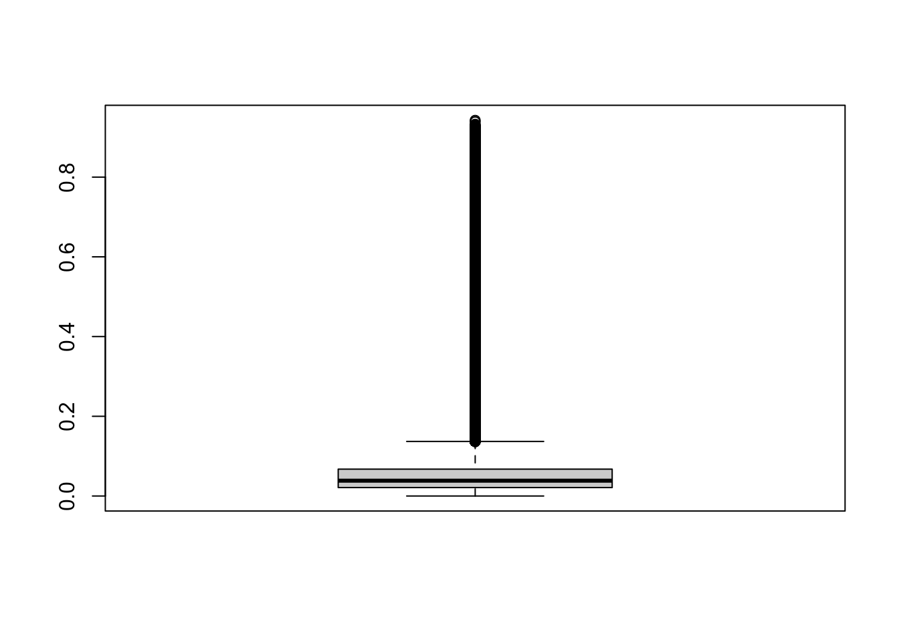
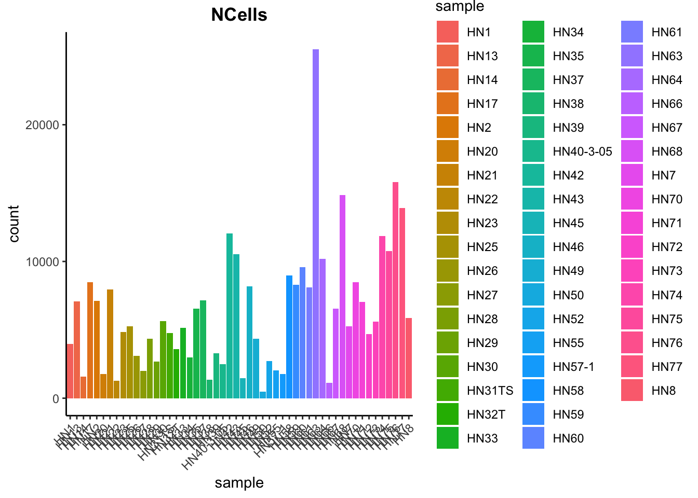

28 GSE234933复现

28.1 导入数据
# 获取所有rds文件的列表
file_list <- list.files("data/other_single_cell_content/GSE234933/GSE234933_MGH_HNSCC_gex_raw_counts", pattern = ".rds")
file_list [1] "HN1_gex_raw_counts.rds" "HN13_gex_raw_counts.rds"
[3] "HN14_gex_raw_counts.rds" "HN17_gex_raw_counts.rds"
[5] "HN2_gex_raw_counts.rds" "HN20_gex_raw_counts.rds"
[7] "HN21_gex_raw_counts.rds" "HN22_gex_raw_counts.rds"
[9] "HN23_gex_raw_counts.rds" "HN25_gex_raw_counts.rds"
[11] "HN26_gex_raw_counts.rds" "HN27_gex_raw_counts.rds"
[13] "HN28_gex_raw_counts.rds" "HN29_gex_raw_counts.rds"
[15] "HN30_gex_raw_counts.rds" "HN31TS_gex_raw_counts.rds"
[17] "HN32T_gex_raw_counts.rds" "HN33_gex_raw_counts.rds"
[19] "HN34_gex_raw_counts.rds" "HN35_gex_raw_counts.rds"
[21] "HN37_gex_raw_counts.rds" "HN38_gex_raw_counts.rds"
[23] "HN39_gex_raw_counts.rds" "HN40-3-05_gex_raw_counts.rds"
[25] "HN42_gex_raw_counts.rds" "HN43_gex_raw_counts.rds"
[27] "HN45_gex_raw_counts.rds" "HN46_gex_raw_counts.rds"
[29] "HN49_gex_raw_counts.rds" "HN50_gex_raw_counts.rds"
[31] "HN52_gex_raw_counts.rds" "HN55_gex_raw_counts.rds"
[33] "HN57-1_gex_raw_counts.rds" "HN58_gex_raw_counts.rds"
[35] "HN59_gex_raw_counts.rds" "HN60_gex_raw_counts.rds"
[37] "HN61_gex_raw_counts.rds" "HN63_gex_raw_counts.rds"
[39] "HN64_gex_raw_counts.rds" "HN66_gex_raw_counts.rds"
[41] "HN67_gex_raw_counts.rds" "HN68_gex_raw_counts.rds"
[43] "HN7_gex_raw_counts.rds" "HN70_gex_raw_counts.rds"
[45] "HN71_gex_raw_counts.rds" "HN72_gex_raw_counts.rds"
[47] "HN73_gex_raw_counts.rds" "HN74_gex_raw_counts.rds"
[49] "HN75_gex_raw_counts.rds" "HN76_gex_raw_counts.rds"
[51] "HN77_gex_raw_counts.rds" "HN8_gex_raw_counts.rds" # 创建一个空的列表来存储Seurat对象
seurat_list <- list()
# 循环读取每个rds文件的数据并创建Seurat对象
for (file in file_list) {
# 拼接文件路径
data.path <- paste0("data/other_single_cell_content/GSE234933/GSE234933_MGH_HNSCC_gex_raw_counts/", file)
# 读取RDS文件数据
seurat_data <- readRDS(data.path)
# 创建Seurat对象，并指定项目名称为文件名（去除后缀）
sample_name <- file_path_sans_ext(file)
seurat_obj <- CreateSeuratObject(counts = seurat_data,
project = sample_name,
min.features = 200,
min.cells = 3)
# 将Seurat对象添加到列表中
seurat_list <- append(seurat_list, seurat_obj)
}
# 提取下划线前面的部分
sample_names <- gsub("_.*", "", file_list)
sample_names [1] "HN1" "HN13" "HN14" "HN17" "HN2" "HN20"
[7] "HN21" "HN22" "HN23" "HN25" "HN26" "HN27"
[13] "HN28" "HN29" "HN30" "HN31TS" "HN32T" "HN33"
[19] "HN34" "HN35" "HN37" "HN38" "HN39" "HN40-3-05"
[25] "HN42" "HN43" "HN45" "HN46" "HN49" "HN50"
[31] "HN52" "HN55" "HN57-1" "HN58" "HN59" "HN60"
[37] "HN61" "HN63" "HN64" "HN66" "HN67" "HN68"
[43] "HN7" "HN70" "HN71" "HN72" "HN73" "HN74"
[49] "HN75" "HN76" "HN77" "HN8" # 合并Seurat对象，将所有Seurat对象合并到一个对象中
seurat_combined <- merge(seurat_list[[1]],
y = seurat_list[-1],
add.cell.ids = sample_names)
seurat_combinedAn object of class Seurat
26734 features across 330385 samples within 1 assay
Active assay: RNA (26734 features, 0 variable features)
52 layers present: counts.HN1_gex_raw_counts, counts.HN13_gex_raw_counts, counts.HN14_gex_raw_counts, counts.HN17_gex_raw_counts, counts.HN2_gex_raw_counts, counts.HN20_gex_raw_counts, counts.HN21_gex_raw_counts, counts.HN22_gex_raw_counts, counts.HN23_gex_raw_counts, counts.HN25_gex_raw_counts, counts.HN26_gex_raw_counts, counts.HN27_gex_raw_counts, counts.HN28_gex_raw_counts, counts.HN29_gex_raw_counts, counts.HN30_gex_raw_counts, counts.HN31TS_gex_raw_counts, counts.HN32T_gex_raw_counts, counts.HN33_gex_raw_counts, counts.HN34_gex_raw_counts, counts.HN35_gex_raw_counts, counts.HN37_gex_raw_counts, counts.HN38_gex_raw_counts, counts.HN39_gex_raw_counts, counts.HN40-3-05_gex_raw_counts, counts.HN42_gex_raw_counts, counts.HN43_gex_raw_counts, counts.HN45_gex_raw_counts, counts.HN46_gex_raw_counts, counts.HN49_gex_raw_counts, counts.HN50_gex_raw_counts, counts.HN52_gex_raw_counts, counts.HN55_gex_raw_counts, counts.HN57-1_gex_raw_counts, counts.HN58_gex_raw_counts, counts.HN59_gex_raw_counts, counts.HN60_gex_raw_counts, counts.HN61_gex_raw_counts, counts.HN63_gex_raw_counts, counts.HN64_gex_raw_counts, counts.HN66_gex_raw_counts, counts.HN67_gex_raw_counts, counts.HN68_gex_raw_counts, counts.HN7_gex_raw_counts, counts.HN70_gex_raw_counts, counts.HN71_gex_raw_counts, counts.HN72_gex_raw_counts, counts.HN73_gex_raw_counts, counts.HN74_gex_raw_counts, counts.HN75_gex_raw_counts, counts.HN76_gex_raw_counts, counts.HN77_gex_raw_counts, counts.HN8_gex_raw_countshead(seurat_combined) orig.ident nCount_RNA nFeature_RNA
HN1_HN1_AAACCTGAGTATTGGA-1 HN1 948 574
HN1_HN1_AAACCTGAGTTGCAGG-1 HN1 6745 257
HN1_HN1_AAACCTGCAATAGCAA-1 HN1 677 320
HN1_HN1_AAACCTGCATTTCACT-1 HN1 4540 1129
HN1_HN1_AAACCTGTCGGCGGTT-1 HN1 909 444
HN1_HN1_AAACCTGTCTCGTTTA-1 HN1 633 352
HN1_HN1_AAACGGGAGCAGCCTC-1 HN1 1262 633
HN1_HN1_AAACGGGAGCCCAGCT-1 HN1 513 275
HN1_HN1_AAACGGGAGTACGCGA-1 HN1 1152 416
HN1_HN1_AAACGGGCACATTTCT-1 HN1 426 249添加样本信息
sample_anno <- read.table("data/other_single_cell_content/GSE234933/GSE234933_MGH_HNSCC_sample_annotation.txt",
sep = "\t",
header = T)
head(sample_anno) Sample Sex Age HPV.Status Smoking.history Original.anatomic.site
1 HN1 Male 37 Negative Yes Oral cavity
2 HN2 Male 55 Negative Yes Oral cavity
3 HN7 Male 90 Negative No Oral cavity
4 HN8 Male 89 Negative Yes Larynx/Hypopharynx
5 HN13 Female 64 Negative Yes Larynx/Hypopharynx
6 HN14 Female 53 Negative Yes Oropharynx
Anatomic.location.of.scRNA.seq.specimen
1 Primary
2 Distant metastasis (Lung)
3 Primary
4 Distant metastasis (sternum)
5 Distant metastasis (skin)
6 Distant metastasis (pleura)sample_anno$Sample [1] "HN1" "HN2" "HN7" "HN8" "HN13" "HN14"
[7] "HN17" "HN20" "HN21" "HN22" "HN23" "HN25"
[13] "HN26" "HN27" "HN28" "HN29" "HN30" "HN31TS"
[19] "HN32T" "HN33" "HN34" "HN35" "HN37" "HN38"
[25] "HN39" "HN40-3-05" "HN42" "HN43" "HN45" "HN46"
[31] "HN49" "HN50" "HN52" "HN55" "HN57-1" "HN58"
[37] "HN59" "HN60" "HN61" "HN63" "HN64" "HN66"
[43] "HN67" "HN68" "HN70" "HN71" "HN72" "HN73"
[49] "HN74" "HN75" "HN76" "HN77" unique(seurat_combined$orig.ident) [1] "HN1" "HN13" "HN14" "HN17" "HN2" "HN20"
[7] "HN21" "HN22" "HN23" "HN25" "HN26" "HN27"
[13] "HN28" "HN29" "HN30" "HN31TS" "HN32T" "HN33"
[19] "HN34" "HN35" "HN37" "HN38" "HN39" "HN40-3-05"
[25] "HN42" "HN43" "HN45" "HN46" "HN49" "HN50"
[31] "HN52" "HN55" "HN57-1" "HN58" "HN59" "HN60"
[37] "HN61" "HN63" "HN64" "HN66" "HN67" "HN68"
[43] "HN7" "HN70" "HN71" "HN72" "HN73" "HN74"
[49] "HN75" "HN76" "HN77" "HN8" old_meta.data <- rownames_to_column(seurat_combined@meta.data, var = "cell_id")
new_meta.data <- merge(x = old_meta.data,
y = sample_anno,
by.x = "orig.ident",
by.y = "Sample",
all.x = T)
new_meta.data$sample <- new_meta.data$orig.ident
head(new_meta.data) orig.ident cell_id nCount_RNA nFeature_RNA Sex Age
1 HN1 HN1_HN1_AAACCTGAGTATTGGA-1 948 574 Male 37
2 HN1 HN1_HN1_AAACCTGAGTTGCAGG-1 6745 257 Male 37
3 HN1 HN1_HN1_AAACCTGCAATAGCAA-1 677 320 Male 37
4 HN1 HN1_HN1_AAACCTGCATTTCACT-1 4540 1129 Male 37
5 HN1 HN1_HN1_AAACCTGTCGGCGGTT-1 909 444 Male 37
6 HN1 HN1_HN1_AAACCTGTCTCGTTTA-1 633 352 Male 37
HPV.Status Smoking.history Original.anatomic.site
1 Negative Yes Oral cavity
2 Negative Yes Oral cavity
3 Negative Yes Oral cavity
4 Negative Yes Oral cavity
5 Negative Yes Oral cavity
6 Negative Yes Oral cavity
Anatomic.location.of.scRNA.seq.specimen sample
1 Primary HN1
2 Primary HN1
3 Primary HN1
4 Primary HN1
5 Primary HN1
6 Primary HN1rownames(new_meta.data) <- new_meta.data$cell_id
new_meta.data$cell_id <- NULL
new_meta.data[,c(4, 6:10)] <- lapply(new_meta.data[,c(4, 5, 7:10)], as.factor)
summary(new_meta.data) orig.ident nCount_RNA nFeature_RNA Sex
Length:330385 Min. : 215 Min. : 184 Female: 65737
Class :character 1st Qu.: 897 1st Qu.: 471 Male :264648
Mode :character Median : 1886 Median : 845
Mean : 3439 Mean :1107
3rd Qu.: 3537 3rd Qu.:1348
Max. :126539 Max. :8839
Age HPV.Status Smoking.history Original.anatomic.site
Min. :31.00 64 : 29808 No :177238 Larynx/Hypopharynx: 68470
1st Qu.:56.00 76 : 25982 Yes:153147 Nasopharynx : 30573
Median :64.00 70 : 23193 Oral cavity :107833
Mean :63.42 44 : 21985 Oropharynx :115022
3rd Qu.:71.00 67 : 21053 Unknown : 8487
Max. :91.00 55 : 19302
(Other):189062
Anatomic.location.of.scRNA.seq.specimen sample
Primary :190573 HN63 : 25501
Locoregional recurrence : 59176 HN76 : 15798
Distant metastasis (Lung) : 34541 HN68 : 14851
Distant metastasis (Liver) : 23083 HN77 : 13892
Unknown primary of the head and neck: 8487 HN42 : 12062
Distant metastasis (skin) : 7073 HN74 : 11863
(Other) : 7452 (Other):236418 seurat_combined@meta.data <- new_meta.data
saveRDS(seurat_combined, file = "output/other_single_cell_content/seurat_GSE234933.rds")28.2 质控
orig.ident nCount_RNA nFeature_RNA Sex Age
HN1_HN1_AAACCTGAGTATTGGA-1 HN1 948 574 Male 37
HN1_HN1_AAACCTGAGTTGCAGG-1 HN1 6745 257 Male 37
HN1_HN1_AAACCTGCAATAGCAA-1 HN1 677 320 Male 37
HN1_HN1_AAACCTGCATTTCACT-1 HN1 4540 1129 Male 37
HN1_HN1_AAACCTGTCGGCGGTT-1 HN1 909 444 Male 37
HN1_HN1_AAACCTGTCTCGTTTA-1 HN1 633 352 Male 37
HN1_HN1_AAACGGGAGCAGCCTC-1 HN1 1262 633 Male 37
HN1_HN1_AAACGGGAGCCCAGCT-1 HN1 513 275 Male 37
HN1_HN1_AAACGGGAGTACGCGA-1 HN1 1152 416 Male 37
HN1_HN1_AAACGGGCACATTTCT-1 HN1 426 249 Male 37
HPV.Status Smoking.history Original.anatomic.site
HN1_HN1_AAACCTGAGTATTGGA-1 37 Yes Oral cavity
HN1_HN1_AAACCTGAGTTGCAGG-1 37 Yes Oral cavity
HN1_HN1_AAACCTGCAATAGCAA-1 37 Yes Oral cavity
HN1_HN1_AAACCTGCATTTCACT-1 37 Yes Oral cavity
HN1_HN1_AAACCTGTCGGCGGTT-1 37 Yes Oral cavity
HN1_HN1_AAACCTGTCTCGTTTA-1 37 Yes Oral cavity
HN1_HN1_AAACGGGAGCAGCCTC-1 37 Yes Oral cavity
HN1_HN1_AAACGGGAGCCCAGCT-1 37 Yes Oral cavity
HN1_HN1_AAACGGGAGTACGCGA-1 37 Yes Oral cavity
HN1_HN1_AAACGGGCACATTTCT-1 37 Yes Oral cavity
Anatomic.location.of.scRNA.seq.specimen sample
HN1_HN1_AAACCTGAGTATTGGA-1 Primary HN1
HN1_HN1_AAACCTGAGTTGCAGG-1 Primary HN1
HN1_HN1_AAACCTGCAATAGCAA-1 Primary HN1
HN1_HN1_AAACCTGCATTTCACT-1 Primary HN1
HN1_HN1_AAACCTGTCGGCGGTT-1 Primary HN1
HN1_HN1_AAACCTGTCTCGTTTA-1 Primary HN1
HN1_HN1_AAACGGGAGCAGCCTC-1 Primary HN1
HN1_HN1_AAACGGGAGCCCAGCT-1 Primary HN1
HN1_HN1_AAACGGGAGTACGCGA-1 Primary HN1
HN1_HN1_AAACGGGCACATTTCT-1 Primary HN1# Add number of genes per UMI for each cell to metadata
sce$log10GenesPerUMI <- log10(sce$nFeature_RNA) / log10(sce$nCount_RNA)
summary(sce$log10GenesPerUMI) Min. 1st Qu. Median Mean 3rd Qu. Max.
0.5671 0.8744 0.8955 0.8916 0.9149 0.9911 # Compute percent mito ratio
sce$mitoRatio <- PercentageFeatureSet(object = sce, pattern = "^MT-")
sce$mitoRatio <- sce$mitoRatio / 100
summary(sce$mitoRatio) Min. 1st Qu. Median Mean 3rd Qu. Max.
0.00000 0.02115 0.03846 0.06435 0.06743 0.94250 boxplot(sce$mitoRatio)
# Visualize the number of cell counts per sample
sce@meta.data |>
ggplot(aes(x = sample, fill = sample)) +
geom_bar() +
theme_classic() +
theme(axis.text.x = element_text(angle = 45, vjust = 1, hjust = 1)) +
theme(plot.title = element_text(hjust = 0.5, face = "bold")) +
ggtitle("NCells")